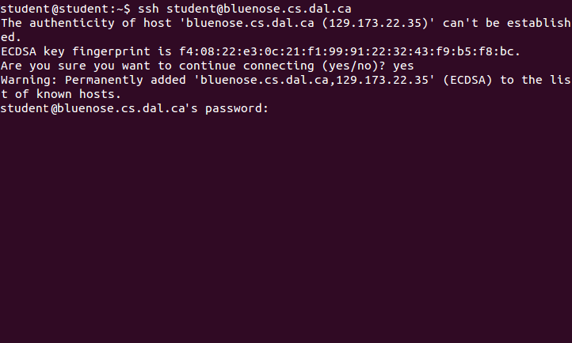

Welcome to the Bluenose tips page. Here you will find instructions on how to connect to bluenose for issuing commands (shell access) or manipulating files (file access) for your operating system. Choose your operating system and type of access from the menu to the left.
Windows
Shell Access
First time
- Download PuTTY (Dalhousie computers already have this downloaded)
- Open PuTTY
- Enter "<csname>@bluenose.cs.dal.ca" in the hostname box, where <csname> is the name you use for logging in to moodle.
- Make sure SSH is selected in the Connection Type Radio Buttons
- Enter "Bluenose" in the "Saved Sessions" box
- Press "Save" to save the session for the next time
- Press "Open" to connect
- Store the new SSH key in the cache
- Enter the password you use on moodle
- You can now issue shell commands to bluenose
Subsequent times
- Open PuTTY
- Select "Bluenose" from the list of saved sessions
- Press "Load" to open the session
- Press "Open" to connect
- Enter the password you use on moodle
- You can now issue shell commands to bluenose
Windows
File Access
First Time
- Download and install WinSCP (Dalhousie computers already have this downloaded)
- Launch WinSCP
- Select "New Site"
- Select "SFTP" under "File protocol"
- Enter "bluenose.cs.dal.ca" under "Host name"
- Enter the username you use on moodle under "User name"
- Enter the password you use on moodle in the "Password" field
- Press "Save" to store the session for next time.
- In the save dialog, press "OK" to save the session
- Press "Login"
- Accept the SSH key and store it in the cache
- You can now drag and drop files from windows into bluenose, or from bluenose into the file system
- Any files in the "public_html" folder will be accessible at http://web.cs.dal.ca/~<csname> where <csname> is the username you logged in with
Subsequent times
- Launch WinSCP
- From the site list, choose whatever you names your session the first time
- Press "Login"
- You can now drag and drop files from windows into bluenose, or from bluenose into the file system
- Any files in the "public_html" folder will be accessible at http://web.cs.dal.ca/~<csname> where <csname> is the username you logged in with
Linux (Ubuntu)
These instructions are for Ubuntu, but should be similar for other Linux distros.
Shell Access
- Open the terminal

- Type "ssh <csname>@bluenose.cs.dal.ca" and press enter, where <csname> is the username you use on Moodle

- Accept the key fingerprint

- Type your password used on mooodle and press enter (no characters will appear while you are typing)
- You can now issue shell commands to bluenose

Linux (Ubuntu)
These instructions are for Ubuntu, but should be similar for other Linux distros.
File Access
- Go to the desktop, or any file window
- From the "Go" menu, select "Enter Location" (or press ctrl-L)
- Type "sftp://<csname>@bluenose.cs.dal.ca/users/cs/<csname>" and press enter, where <csname> is the username you use on Moodle
- (Optional) From the bookmark menu, select "Bookmark this location" or press ctrl-B
- You may now copy files in or out of this window like any other file window